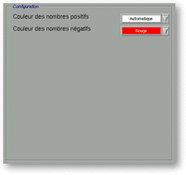

<!-- Documentation XQuad (c)1995-2000 AXENE contact axene@axene.org>
<html>

<head>
<title>Mise en forme des nombres: Couleurs.</title>
</head>

<body BGCOLOR="#FFFFFF" BACKGROUND="Images/back.gif" TEXT="#000000">

<p ALIGN="right">  </p>

<p align="center"><br>
<a NAME="box_numfmt_colors"></p>

<h2 align="center">Configuration des couleurs</h2>
</a>

<p>Lorsque l'on sélectionne le bouton <i>&quot;Couleurs&quot;</i> de la barre horizontale
(en haut de la partie droite de la boîte de dialogue 'Mise en forme de nombres'), suivant
le type du format sélectionné, la section <i>&quot;Configuration&quot;</i> peut prendre
une des deux formes suivantes&nbsp;: <br>
<br>
</p>

<hr>

<p><br>
</p>
<a NAME="bnf_colors_1">

<h3>Format&nbsp;: Nombres, Unités, Scientifiques, Pourcentages</h3>
</a>

<p>Si le type de format de nombre est <i>&quot;Nombres&quot;</i>, <i>&quot;Unités&quot;</i>,
<i>&quot;Scientifiques&quot;</i>, ou <i>&quot;Pourcentages&quot;</i>, la section <i>&quot;Configuration&quot;</i>
est&nbsp;: </p>

<p align="center"> <br>
<small><i>Photo d'écran de la section &quot;Configuration&quot;. </i></small></p>

<p>Cette section est composée de haut en bas par&nbsp;: 

<ul>
  <li><a NAME="list_color_pos">la liste déroulante &quot;Couleur des nombres positifs&quot;
    permet de <b>choisir la couleur d'affichage des nombres positifs</b>. La liste des
    couleurs peut être modifiée dans la boîte de </a><a HREF="Box_Color.html">'Préparation
    des couleurs'</a>. L'entrée <i>&quot;Auto&quot;</i> permet de ne pas spécifier de
    couleur particulière; la couleur d'affichage viendra de la couleur du style utilisé
    défini dans la boîte <a HREF="Box_Font.html">'Composition des polices'</a>. <br>
    &nbsp;</li>
  <li><a NAME="list_color_neg">la liste déroulante &quot;Couleur des nombres négatifs&quot;
    permet de <b>choisir la couleur d'affichage des nombres négatifs</b>. La liste des
    couleurs peut être modifiée dans la boîte de </a><a HREF="Box_Color.html">'Préparation
    des couleurs'</a>. L'entrée <i>&quot;Auto&quot;</i> permet de ne pas spécifier de
    couleur particulière; la couleur d'affichage viendra de la couleur du style utilisé
    défini dans la boîte <a HREF="Box_Font.html">'Composition des polices'</a>. </li>
</ul>

<p><br>
<br>
</p>

<hr>

<p><br>
</p>
<a NAME="bnf_colors_2">

<h3>Format&nbsp;: Booléens</h3>
</a>

<p>Si le type de format de nombre est <i>&quot;Booléens&quot;</i>, la section <i>&quot;Configuration&quot;</i>
est&nbsp;: </p>

<p align="center"> <br>
<i><small>Photo <i>d'écran de la section &quot;Configuration&quot;. </i></small></p>

<p>Cette section est composée de haut en bas par&nbsp;: 

<ul>
  <li><a NAME="list_color_true">la liste déroulante &quot;Couleur pour VRAI&quot; permet de <b>choisir
    la couleur d'affichage de la valeur <i>&quot;VRAI&quot;</i></b>. La liste des couleurs
    peut être modifiée dans la boîte de </a><a HREF="Box_Color.html">'Préparation des
    couleurs'</a>. L'entrée <i>&quot;Auto&quot;</i> permet de ne pas spécifier de couleur
    particulière; la couleur d'affichage viendra de la couleur du style utilisé défini dans
    la boîte <a HREF="Box_Font.html">'Composition des polices'</a>. </i><br>
    &nbsp;<i></li>
  <li><a NAME="list_color_false">la liste déroulante &quot;Couleur pour FAUX&quot; permet de <b>choisir
    la couleur d'affichage de la valeur <i>&quot;FAUX&quot;</i></b>. La liste des couleurs
    peut être modifiée dans la boîte de </a><a HREF="Box_Color.html">'Préparation des
    couleurs'</a>. L'entrée <i>&quot;Auto&quot;</i> permet de ne pas spécifier de couleur
    particulière; la couleur d'affichage viendra de la couleur du style utilisé défini dans
    la boîte <a HREF="Box_Font.html">'Composition des polices'</a>. </li>
</ul>

<p><br>
</p>

<hr>

<p ALIGN="right"></p>
</i>
</body>
</html>
